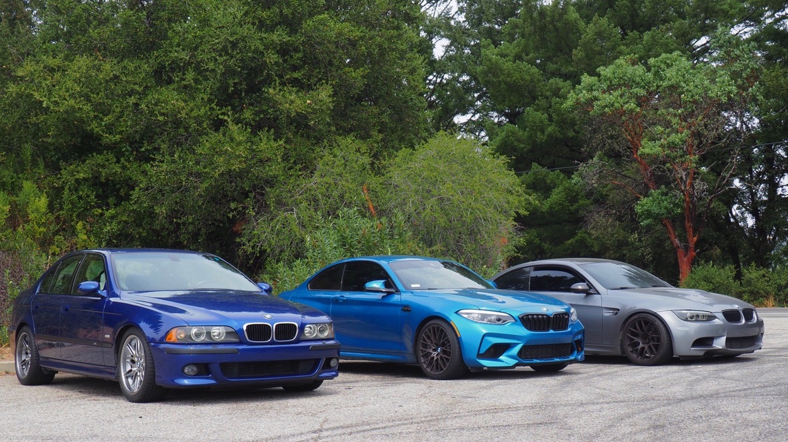

BMW Cars on Highway 9
E39 M5
Information
This E39 M5 is owned by my buddy Rongchang, it is painted in a shade of paint known as "Lemans Blue", the model year of this car is 2001 and it has almost 200,000 miles on the dashboard. These cars only came in a 6 speed transmission, they are a true driver's car.
Benchmarks
- The E39 M5 is powered by the BMW S62 V8 engine, which generates a power output of 294 kW (400 PS; 394 hp) at 6,600 rpm and 500 N⋅m (369 lb⋅ft) of torque at 3,800 rpm.
- The transmission is the Getrag 420G six-speed manual, as used in the E39 540i but with an upgraded clutch due to the increased torque.
- The E39 M5 uses aluminium-intensive MacPherson strut front suspension and multi-link rear suspension, as per the other V8 models of the E39 5 Series range.
F87 M2
Information
This F87 M2 is owned by my buddy Gibran, it is painted in a shade of paint known as "Long Beach Blue", the model year of this car is 2018 and it has under 100,000 miles on the dashboard.
Benchmarks
- The M2 is powered by the turbocharged 3.0-litre N55B30T0 straight-six engine rated at 272 kW (365 hp) at 6,500 rpm and 465 N⋅m (343 lb⋅ft) between 1,450 and 4,750 rpm, while an overboost function temporarily increases torque to 500 N⋅m (369 lb⋅ft).
- The M2 is available with a 6-speed manual or with a 7-speed dual-clutch transmission. 0–100 km/h acceleration times are 4.5 seconds manual transmission models and 4.3 seconds for models equipped with the 7-speed dual clutch transmission.
- The M2 features reinforced pistons, and has lighter aluminium front and rear suspension components resulting in a 5 kg (11 lb) weight reduction.
E92 M3
Information
This E92 M3 is owned by me, it is painted in a shade of paint known as "Space Grey Metallic", the model year of this car is 2012 and it has around 75,000 miles on the dashboard.
Benchmarks
- The M3 model of the E90/E92/E93 3 Series range was powered by the BMW S65 V8 engine and was produced in sedan, convertible and coupé body styles. The E9x is the first and only standard production M3 powered by a V8 engine. In the standard M3, the S65 engine rated at 309 kW (420 PS; 414 hp) at 8,300 rpm[99] and 400 N⋅m (295 lb⋅ft) at 3,900 rpm.
- Initially, the M3 was produced with a 6-speed manual transmission. In April 2008, the E90/E92/E93 M3 became the first BMW to be available with a dual-clutch transmission when the 7-speed Getrag "M-DCT" transmission was introduced as an option.
- The official kerb weights for the 2008 European-specification models (with manual transmission) are 1,580 kg (3,483 lb) for the coupé, 1,605 kg (3,538 lb) for the sedan and 1,810 kg (3,990 lb) for the convertible.
Gallery
To see more of my M3, please visit my instagram page.